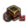

| 只适用于DLC达摩激活时。 |
1.26版本在外交侮辱新增了“轻蔑的侮辱”这一项[1]，这需要你拥有正威望，每进行一次轻蔑的侮辱，需要消耗5点  威望，并带来如下效果：
威望，并带来如下效果：
- 受到侮辱的国家对你
 −100 看法，基础衰退速率是 +5/年。
−100 看法，基础衰退速率是 +5/年。 - 受到侮辱的国家的宿敌对你 +25 看法，基础衰退速率是 −2.5/年。
- 如果受到侮辱的国家是你的宿敌，则
 +10 力量投射。
+10 力量投射。 - 受到侮辱的国家对你获得宣战理由“外交侮辱”。
侮辱话语列表
当进行一次轻蔑侮辱时，游戏将会随机从条目里挑选符合发出方与接收方条件的句子。玩家可以点击骰子图标进行随机选择。
- 参见：彩蛋
许多侮辱语句事实上都是有明确出处的彩蛋。
通用侮辱
| 侮辱内容 | 对侮辱发出方的要求 | 对受到侮辱方的要求 | 备注 |
|---|---|---|---|
| 你妈妈就跟仓鼠似的那么能生，你爸爸浑身一股果酒味儿！ | 无 | 无 | 💭 出自喜剧电影"Monty Python and the Holy Grail"。 |
| 我们的末日到了！路西法的走狗正在四处流窜——啊，不，原来只是[Root.GetAdjective]人啊。 | 在基督教宗教组中 | 无 | |
| 另外，我认为必须毁掉[Root.Capital.GetCapitalName]！ | 无 | 无 | 💭 在第二次布匿战争之后，主战派的罗马政治家老加图在任何演说后都要加上一句“还有，我认为迦太基必须被毁灭！”。 |
| 当后人书写我们这个时代的历史时，想必他们会可怜你们——以及对你们感到恶心。 | 无 | 无 | |
| 我上次去出恭可都比跟[Root.GetAdjective]大使共进晚餐要愉快得多。 | 无 | 无 | |
| 快看！那边有一小坨可爱的脏东西！ | 无 | 无 | 💭 出自喜剧电影"Monty Python and the Holy Grail"。 |
| 你们流的血可使我们从你们那里夺取的土地更肥沃。 | 无 | 无 | |
| [Root.GetAdjective]人根本不懂什么叫治国。 | 无 | 无 | |
| [Root.GetName]这个国家全是问题，我怀疑原因是你们这些[Root.Culture.GetName]人。 | 无 | 和侮辱的发出方的主流文化不同 | |
| 在我们下的这局大棋里，你就是一个小卒子。 | 无 | 无 | |
| 在[From.GetName]，『[Root.GetName]』跟屎是同义词。 | 无 | 无 | |
| 你的恶行从爱尔兰到契丹无人不知，无人不晓。 | 无 | 无 | 💭“王国风云2”中著名的侮辱语句。 |
| 『[Root.GetAdjective]文化』就是种矛盾修辞，你说是吧？ | 无 | 和侮辱的发出方的主流文化不同 | |
| 祝贵国满天都是扫把星。 | 无 | 无 | 💭 事件“扫帚星” |
| 当你国出现在地图上时，那地图就再也不能称为艺术品了。 | 无 | 无 |
特殊侮辱
| 文件内注释 | 侮辱内容 | 对侮辱发出方的要求 | 对受到侮辱方的要求 | 备注 |
|---|---|---|---|---|
| 无军队 | 彼欲何为？欲血溅吾身邪？ | 无 | 军队规模小于1 | 💭 出自喜剧电影"Monty Python and the Holy Grail"。 |
| 管账 | 将来会有一天，连[Root.GetAdjective]的商人都能懂得怎么记账。 | 来自贸易的收入至少33% | 来自贸易的收入小于33% | |
| 罗马的控制者 | 也许我的军队应该确认一下是否条条大路通罗马。 | 无 | 首都是 |
|
| 打猎事故 | 我听说你的继承人喜欢打猎。千万要注意安全呀，发生事故的话就太可惜了。 | 无 | 继承人的行政、外交、军事能力至少一项达到4 | 💭 事件“打猎事故” |
| 君主制 | 『自命不凡妄想症』就是你们整个王朝血脉的家族性疾病。 | 是君主制 | 是君主制且不在摄政 | |
| 钻石 | 有人说钻石恒久远，而你手头好像有不少钻石。交出来一点，我们会看看这东西是不是比贵国还要长命。 | 首都位于欧洲 | 是省份 |
|
| 欧洲对印度 | 这就是胡椒生长的地方？看来我们来得真是时候，正巧赶上了一场大丰收啊…… | 首都位于欧洲 | 首都位于印度 | |
| 针对巴赫曼尼 | 很快你所有的财宝都将归我们所有，包括你那个宝贝绿松石椅。 | 无 | 是 |
|
| 针对德干人 | 当我们筚路蓝缕开创基业时，你却苟活在德干的浪荡流民中间。现在，向帖木儿及成吉思汗的继业者投降——或者死。 | 是 |
首都位于德干区域 | |
| 针对帖木儿 | 贵国本来可称一时之雄——若不是你们自相残杀来攀争本时代最伟大杀人魔王名头的话。 | 不是 |
王朝是"Timurid" | |
| 我们远道而来历经万险登上贵国海岸。然而，没有什么艰难险阻能比得过你们异教统治下的罪恶渊薮。 | - | - | 未启用 | |
| 探索者对印度或非洲 | 你们有国旗吗？ | 首都位于欧洲 | 和发出方的宗教组不同，首都位于印度或者非洲 | 💭 Eddie Izzard "Cake or Death" Sketch From Dress to Kill，4:00-4:30 |
| 基督教对穆斯林 | 像你们这样的异教徒占据着如此一片富饶的土地真是个危险的奇迹。还好，这马上就会被纠正。 | 在基督教宗教组 | 在穆斯林宗教组 | |
| 针对哈布斯堡 | [From.GetAdjective]的王座绝不会被你那遭咒的畸形家族玷污。 | 是君主制 | 王朝是"von Habsburg" | |
| 拜占庭对威尼斯 | 你是这片土地的灾难，你将因你的所作所为被绞死在自己的城墙上！ | 是 |
是 |
|
| 盖布鲁斯对他国的侮辱 | 你打仗就跟个笨奶牛似的！ | 统治者名是"Guybrush" | 无 | 💭 出自游戏《猴岛小英雄》系列 |
| 他国对盖布鲁斯的侮辱 | 你打仗像个挤奶的！ | 无 | 统治者名是"Guybrush" | 💭 出自游戏《猴岛小英雄》系列 |
| 低行政/外交能力 | [Root.Monarch.GetName]的脑袋里装的东西跟太监的裤裆里差不多。 | 无 | 不处于摄政状态，且外交或行政能力小于 2 | 💭 出自系列喜剧《黑爵士》的特别篇《黑爵士：骑士年代》。 |
| 玩家之间1 | 菜鸡！ | 不是AI | 不是AI | |
| 玩家之间2 | 变强点再来，菜鸡 ！ | 不是AI | 不是AI | |
| 哥萨克对土耳其人 | 哦苏丹，土耳其的恶魔，该死的魔鬼的狐朋狗友，路西法他本人的走狗。 | 拥有政府改革谢契拉达 | 主流文化是土耳其，并且为君主制 | 💭 扎波罗热哥萨克人给奥斯曼苏丹穆罕默德四世的回信 |
| 穆斯林&和约 | 当我们的子孙回顾今朝时，他们会知道：你们是伤到了我们一点须发，我们却要卸掉你们的臂膊。 | 是穆斯林，和受侮辱方有和约 | 无 | |
| 针对丹麦 | 丹麦国里恐怕有些不可告人的坏事。 | 无 | 是 |
💭 语出《哈姆雷特》第一场第四幕。取朱生豪译本。 |
| 针对英格兰 | 如果[Root.Monarch.GetName]掉进了泰晤士河，那只能算是不幸。但如果有人把[Root.Monarch.GetHerHim]再捞出来，那才是真正的灾难。 | 无 | 拥有省份 |
|
| 马普雷拉特宣传册1 | [Root.Monarch.GetName]是一个自大、可悲、专横、亵渎、险恶以及有害的主教和篡位者。 | 是 |
是 |
💭 出自化名为Martin Marprelate的清教徒撰写的攻击英格兰教会的小册子，1588年前后流行 |
| 马普雷拉特宣传册2 | 你们的[Root.Monarch.GetTitle]是一个非法畸形伪冒私生的教会统治者、受魔鬼洗礼的人、伪教宗、反基督者、恶魔化身、超级无赖、高产骗子。 | 是 |
是 |
💭 出自化名为Martin Marprelate的清教徒撰写的攻击英格兰教会的小册子，1588年前后流行 |
| 针对萨克森 | 要是你那些迈森瓷器有什么三长两短，那就太可惜了…… | 无 | 是 |
|
| 堡垒 | 你们的城墙将在我们的大炮面前崩塌，正如大海冲走流沙。 | 军事科技达到 7 | 至少一个省份堡垒等级达到 3 | |
| 来自革命者 | [Root.Monarch.GetName]，你的尸体将铺平我们前进的道路！ | 是革命帝国或共和制革命国家 | 不处于摄政状态 | |
| 低政府等级 | 你头上的那个可怜玩意儿就是传给你的[Root.GetName]之冠？ | 是君主制，政府等级至少为 |
政府等级是 |
|
| 低行政能力 | 我还为你准备了另一条粗鄙之语，可我估计你连那句话里的字都认不全。 | 无 | 行政能力小于 2 | |
| 针对大不列颠 | 日不落帝国是时候落日了。 | 无 | 是 |
|
| 来自阿拉伯人 | 祝您被活活缝进死骆驼的肚子里。 | 在阿拉伯或者马格里布文化组中 | 无 | 💭“王国风云2”中的侮辱语句。 |
| 针对懦夫特质 | 我建议你把制服裤子改成棕色，这样吓得屁滚尿流的时候就看不出来了嘛。 | 无 | 君主有懦夫特质 | 💭 💩 |
| 针对罪人特质 | [Root.Consort.GetName]是否知道你房间里藏了多少婊子？ | 无 | 君主有罪人特质，且有配偶 | |
| 针对神圣罗马帝国 | 你国既不神圣，也不罗马，更非帝国。 | 无 | 是神圣罗马帝国皇帝 | |
| 针对塞尔维亚 | 你的鹰有两个头，却一顶王冠也没有。 | 无 | 是 |
|
| 印度人对欧洲人 | 你该滚了。 | 科技组是印度 | 科技组是西欧，在印度拥有省份 | |
| 日本 | 即使是切腹也无法恢复你的荣誉。 | 在日本文化组 | 在日本文化组 | |
| 贷款 | 你们经济的惨状是对所有未来统治者的警示。 | 无 | 至少有 5 笔贷款，或者破产 | |
| 叛军 | 你看百姓揭竿斩木，百姓看你恶心想吐。 | 无 | 国内存在叛军 | 💭 原句为双关语："revolting"既是叛乱"revolt"的现在分词，也是形容词“令人作呕的”。 |
| 低军事科技 | 你的士兵是不是连谷仓这么大的靶子都打不中？还是说他们仍然把步枪当成棍子使？ | 无 | 军事科技等级低于侮辱的发出国 | |
| 金帐汗国对莫斯科 | 你们这些替我们收税的暴发户们应该清楚自己的位置——被践踏在我们战马的铁蹄下！ | 是 |
是 |
|
| 瓦拉几亚对奥斯曼 | 我们会把[Root.Monarch.GetName]的头钉在矛尖上，就像我们对你们那可怜的军队所做的那样。 | 是 |
是 |
|
| 对柏柏尔海盗 | 你已经在地中海作祟太久了，遭瘟的海盗！ | 宗教在基督教宗教组 | 文化在马格里布文化组，且宗教在穆斯林宗教组 | |
| 土耳其醉鬼 | 你真是朗姆国的苏丹，你这醉鬼！ | 无 | 是土耳其文化，拥有  沉溺酒色君主特质 |
💭 朗姆酒（rum）与罗姆（Rûm）苏丹国同型 |
| 针对苏格兰 | 我们将夺走你的生命，还有你的自由！ | 无 | 是 |
💭 电影《勇敢的心》中华莱士的台词: "They may take our lives but they will never take our freedom!" |
| 佛教徒的侮辱 | 愿你在不悦与蒙昧中轮回千世。 | 是 |
无 | |
| 针对英格兰2 | 贵国的价值看来确实只与一匹马相当。 | 无 | 是 |
💭 莎士比亚历史剧《理查三世》第五幕："A horse! A horse! My kingdom for a horse!" |
| 波斯人的侮辱 | 我们的弓箭将遮天蔽日！ | 在伊朗文化组 | 无 | 💭 电影《斯巴达300勇士》台词；改编自史实 |
| 中国的侮辱1 | 吾闻[Root.Monarch.GetName]耽于[Root.religion.GetName]甚矣。[From.Monarch.GetHerHis]来世如何，区区神灵尚可指摘。尔等今生若何，却在吾皇股掌之间！ | 是中国皇帝 | 无 | 💭 朱元璋《谕西番、罕东、毕里等诏》： “……俺听得说，你每释伽佛根前、和尚每根前好生多与布施么道。那的是十分好勾当，你每做了者，那的便是修那再生的福有。俺如今掌管着眼前的祸福俚，你西番每怕也那不怕？……” |
| 中国的侮辱2 | 朝于天子，许尔述职。不朝，六师移之！ | 是中国皇帝 | 无 | |
| 中国的侮辱3 | 亡羊补牢，为时未晚。 | 在中华文化组 | 无 | |
| 共和制对君主国 | 听着，躺在池塘里送上剑的奇怪女人并不能成为国家统治权的来源。统治权来自人民，而非某些滑稽的水上仪式。 | 是农民共和国 | 是君主制 | 💭 出自喜剧电影"Monty Python and the Holy Grail"台词；“湖中剑”来源于亚瑟王的相关传说 |
| 海盗1 | 饭桶！你刚刚跟我说什么？我远航七海，足登百舰。 | 是海盗共和国 | 无 | |
| 海盗2 | 我要用霰弹把你打成筛子，让你被弹丸和鲜血窒息。淹死吧，你这恶棍！ | 是海盗共和国 | 无 | |
| 海盗3 | 要是你能一直这样喝朗姆酒，这个世界就能摆脱一个肮脏的恶棍了！ | 是海盗共和国 | 无 | 💭 语出小说《金银岛》 |
| 海盗4 | 我养过的一条狗都比你聪明。 | 是海盗共和国 | 君主拥有沉溺酒色特质 | |
| 海盗5 | 我给你两个选择，被剖腹，或是被斩首！ | 是海盗共和国 | 无 | |
| 丛林 | 这点我得承认，[Root.GetName]的确比[From.GetName]拥有更加广阔的领土。但你也得承认，[From.Monarch.GetName]统治着人类，而[Root.GetName]统治的都是森林和蚊子！ | 省份数量少于受侮辱方，首都地形不是丛林或者沼泽 | 首都地形是丛林或者沼泽 | |
| 德式幽默 | 德式幽默是什么狗屁玩意。 | 不在日耳曼文化组 | 在日耳曼文化组 |
成就

Foul Mouthed
粗鄙之语
轻蔑羞辱10个与你接壤的国家。